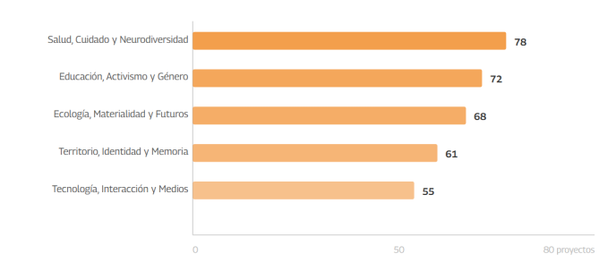
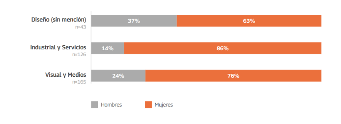

Cada semestre, un grupo de estudiantes del programa de Diseño de la Universidad de Chile defiende su Proyecto de Título ante una comisión examinadora. Cada proyecto aprobado queda, además, registrado: quién lo hizo, bajo qué guía, en qué semestre, con qué nota, y lo más revelador, bajo qué tendencia temática se clasifica. Acumulados desde 2021, esos registros suman hoy 334 proyectos aprobados, una muestra lo bastante grande para empezar a ver patrones que ningún proyecto individual revela por sí solo.
Este recorrido parte de lo más general, ¿cuántos proyectos hay? y ¿quién los hace?, y desciende hacia lo más específico: qué temas se repiten, qué combinaciones de mención y tendencia son frecuentes, cómo ha cambiado el interés por cada área en el tiempo, y finalmente, proyecto por proyecto, qué dice cada quien que tituló.
¿Qué panorama general presentan los proyectos de título de Diseño UCH?
De los 334 proyectos aprobados, el 78,1% corresponde a mujeres y el 21,9% a hombres. Esta proporción se sostiene de forma consistente entre 2021 y 2025, lo que sugiere que no es un fenómeno puntual de alguna generación, sino una característica estructural de quienes hoy completan el programa.
El volumen de titulaciones también ha crecido con fuerza: los primeros tres semestres registrados (2021-2 a 2022-2) suman apenas 24 proyectos, mientras que los dos últimos semestres (2025-1 y 2025-2) suman 126, más de cinco veces esa cifra. Parte de este salto responde a que el programa, vigente desde 2019, recién alcanza en estos años su régimen de titulación estable; otra parte sugiere que la demanda por completar el proceso de título se ha intensificado.
¿Qué tendencias y patrones temáticos se repiten?
Cada proyecto se clasifica en una de cinco grandes tendencias: Salud, Cuidado y Neurodiversidad; Educación, Activismo y Género; Ecología, Materialidad y Futuros; Territorio, Identidad y Memoria; y Tecnología, Interacción y Medios. Ninguna domina de forma aplastante sobre las demás, pero tampoco están repartidas en partes iguales.

La diferencia entre la tendencia más numerosa (Salud, con 78 proyectos) y la menos numerosa (Tecnología, con 55) es de 23 proyectos: la primera reúne 1,4 veces más trabajos que la última. Es una brecha real, pero moderada. El dato más interesante no es cuál tendencia "gana", sino que las cinco coexisten en proporciones relativamente cercanas, lo que indica que el cuerpo estudiantil reparte su interés de forma bastante distribuida entre cuidado, activismo, materialidad, territorio y tecnología.
¿Qué combinaciones de mención y tendencia concentran la mayor cantidad de proyectos?
El panorama cambia cuando se cruza la tendencia temática con la mención de titulación. El programa ofrece tres títulos: Diseño (sin mención), Diseño con mención Industrial y Servicios, y Diseño con mención Visual y Medios, que concentra casi la mitad de las titulaciones (49,4%).
El cruce revela una especialización clara: la mención Industrial y Servicios concentra su producción en Ecología, Materialidad y Futuros (43 proyectos) y en Salud, Cuidado y Neurodiversidad (42), es decir, en problemas que requieren resolver objetos, dispositivos o sistemas físicos. La mención Visual y Medios, en cambio, se concentra en Educación, Activismo y Género (45) y Territorio, Identidad y Memoria (41), temas que se resuelven preferentemente a través de piezas gráficas, editoriales o audiovisuales. Esto no es casual: cada mención convoca a estudiantes con intereses afines, y a la vez orienta esos intereses hacia ciertos lenguajes de resolución.
¿La proporción de hombres y mujeres es la misma en las tres menciones?
El 78,1% de mujeres entre el total de titulados no se reparte de forma pareja entre las tres menciones del programa. Al desagregar por mención, aparece un dato que contradice la intuición de que las áreas "más técnicas" u orientadas a objetos atraen proporcionalmente a más hombres.

La mención Industrial y Servicios, la más asociada a objetos, dispositivos y sistemas físicos es, paradójicamente, la que concentra mayor proporción de mujeres (85,7%), por sobre Visual y Medios (76,4%) y muy por sobre Diseño sin mención (62,8%). El estereotipo de que las mujeres se inclinan más por lo gráfico y comunicacional, y los hombres por lo técnico y objetual, no se sostiene en estos datos: ocurre exactamente lo contrario.
¿Cómo ha evolucionado el interés por cada tendencia en el tiempo?
Mirar la fotografía acumulada de 334 proyectos esconde un dato importante: el peso de cada tendencia no ha sido constante semestre a semestre. Algunas áreas crecen de forma sostenida; otras aparecen y desaparecen según la coyuntura.
Las cinco tendencias crecen en volumen absoluto, lo que es esperable porque el total de titulados también crece. Pero el ritmo no es igual: Salud, Cuidado y Neurodiversidad pasa de prácticamente no existir en 2021-2022 a liderar en 2024-2 y mantenerse alta en 2025, lo que sugiere un interés creciente y sostenido. Tecnología, Interacción y Medios, en cambio, crece de forma más errática y nunca llega a liderar ningún semestre, quedando consistentemente como la tendencia de menor producción relativa. Esa brecha sostenida en el tiempo es justamente la señal de un territorio menos explorado.
¿Qué oportunidades de investigación e innovación surgen de estos hallazgos?
Tres lecturas se desprenden de este recorrido. Primero, la distribución temática es más equilibrada de lo que cabría esperar: ninguna tendencia se impone sobre el resto, lo que habla de un cuerpo estudiantil con intereses diversos y no de una moda pasajera concentrada en un solo tema. Segundo, la especialización por mención, objetos y sistemas físicos en Industrial y Servicios, piezas comunicacionales en Visual y Medios, es consistente y predecible, lo que sugiere que quienes buscan cruzar esa frontera (resolver un problema de salud con una pieza editorial, o un problema de género con un objeto físico) encuentran menos antecedentes directos en qué apoyarse. Tercero, Tecnología, Interacción y Medios es la tendencia más rezagada de forma sostenida en el tiempo, lo que la convierte en el territorio con mayor espacio disponible para quienes buscan un tema de título con menos competencia directa y más preguntas abiertas.
Para quienes hoy enfrentan la elección de un tema de Proyecto de Título, estos datos no dictan qué investigar, pero sí muestran dónde ya hay mucho camino recorrido y dónde el terreno está más despejado.
Explorar los 334 proyectos de título
El listado completo de proyectos aprobados está disponible para su revisión directa. El buscador filtra en tiempo real por autor o autora, nombre del proyecto, tendencia, profesor o profesora guía, o palabras clave. Cuando el proyecto está disponible en el Repositorio Académico de la Universidad de Chile, su título enlaza directamente a la ficha correspondiente.
| Semestre | Autor/a | Proyecto | Tendencia | Profesor/a guía | Nota |
|---|
No se encontraron proyectos con ese criterio.
Leídos uno por uno, estos 334 proyectos son también una crónica de lo que un grupo de jóvenes diseñadores y diseñadoras consideró urgente resolver en los últimos cinco años: cuerpos, cuidados, materiales, territorios, memorias e interfaces. Las próximas generaciones heredan ese mapa, con sus zonas densamente trabajadas y sus zonas todavía en blanco.
Fuentes
Registro de Proyectos de Título aprobados, programa de Diseño, Universidad de Chile, hasta el segundo semestre de 2025 (n=334); Proyectos de Título — Diseño UCH, sitio de referencia sobre el programa vigente desde 2019.